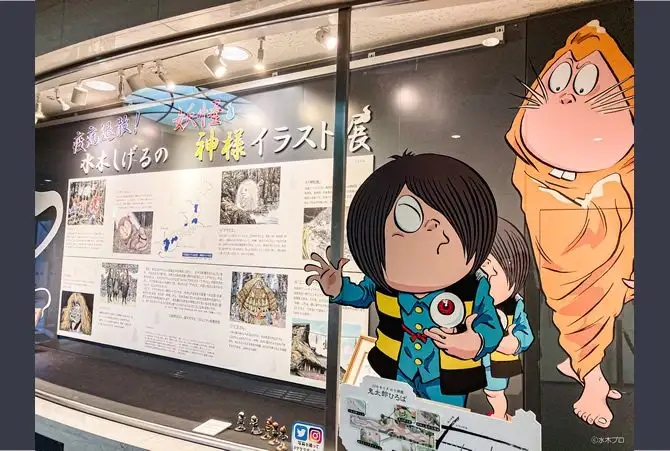

Chofu, Tokyo: things to do, food and stays
Chofu · Tokyo
Chofu
Highlighted on the Tokyo map.

Sights
Dining
Don Bravo
ドンブラボー

European restaurant in Chofu, Tokyo.
SALUMERIA 69
サルメリアロッキュー

Restaurant in Chofu, Tokyo.
Teuchi Mensai Kamei
手打麺祭 かめ囲

Noodle restaurant in Chofu, Tokyo.
Shibasaki Tei Tsutsujigaoka honten
柴崎亭 つつじヶ丘本店

Noodle restaurant in Chofu, Tokyo.
AOSAN Sengawa ten
AOSAN 仙川店

Sweets and bakery shop in Chofu, Tokyo.
Tezukuri Gyoza no Mise Yoshiharu
手作り餃子の店 吉春

Chinese or Asian restaurant in Chofu, Tokyo.
Maruta
マルタ

Restaurant in Chofu, Tokyo.
Takechan Niboshi Ramen
たけちゃんにぼしらーめん

Noodle restaurant in Chofu, Tokyo.
Neko to Tsuki chan mie noodles
猫と月 chan mie noodles

Noodle restaurant in Chofu, Tokyo.
Ramen Jiro Senkawa
ラーメン二郎 仙川店

Noodle restaurant in Chofu, Tokyo.
ramensemmontennanzo
ラーメン専門店 なんぞ

Noodle restaurant in Chofu, Tokyo.
Ken
絢

Noodle restaurant in Chofu, Tokyo.
Suzuki
鈴木

Seafood restaurant in Chofu, Tokyo.
Tio Danjo
ティオ・ダンジョウ

European restaurant in Chofu, Tokyo.
feuquiage

Sweets and bakery shop in Chofu, Tokyo.
ILL FROGS Reservation
イル フロッグス

Cafe in Chofu, Tokyo.
Kumaou Ramen
熊王ラーメン

Noodle restaurant in Chofu, Tokyo.
Motsuyaki Dokoro Ishi Honten
もつやき処い志井 本店

Izakaya or bar in Chofu, Tokyo.
PEP spanish bar Choufu ten
PEP spanish bar 調布店

European restaurant in Chofu, Tokyo.
Ramen Meji
ラーメン めじ

Noodle restaurant in Chofu, Tokyo.
Calendar
かれんど

Noodle restaurant in Chofu, Tokyo.
Sapporo Miso Men Yuu
札幌味噌麺 優

Noodle restaurant in Chofu, Tokyo.
Tsuchi to Ao
土と青

Seafood restaurant in Chofu, Tokyo.
GREEN THUMB Choufu ten
GREEN THUMB 調布店

Sweets and bakery shop in Chofu, Tokyo.
KAJITSUYA CAFE
果実屋珈琲

Cafe in Chofu, Tokyo.
Majo no Curry
魔女のカレー

Noodle restaurant in Chofu, Tokyo.
Tegamisha Second Story
手紙舎 セカンドストーリー

Cafe in Chofu, Tokyo.
Tegami Sha
手紙舎

Cafe in Chofu, Tokyo.
Men Dokoro Kazuya
麺処 かず屋

Noodle restaurant in Chofu, Tokyo.
JACKSON HOLE
ジャクソンホール

Izakaya or bar in Chofu, Tokyo.
China Soba Medetaya
支那そば めでた屋

Noodle restaurant in Chofu, Tokyo.
Rakuzan
楽山

Noodle restaurant in Chofu, Tokyo.
cafe&bar Lecume des Jours
レキュム・デ・ジュール

Cafe in Chofu, Tokyo.
Soba Dokoro Yusui
そば処 湧水

Noodle restaurant in Chofu, Tokyo.
Tamano Ya
玉乃屋

Noodle restaurant in Chofu, Tokyo.
Jidori to Iseebi Chuuka Soba Katakuna
地鶏と伊勢海老 中華そば 頑

Noodle restaurant in Chofu, Tokyo.